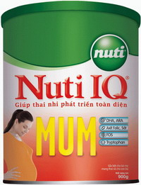

Gain Advance - abbott |
|
|  |
Thành phần dinh dưỡng: Sữa không béo, dầu thực vật, đường lactose, đường sucrose, hương liệu vani nhân tạo, các vitamin và khoáng chất cần thiết, nucleotide và taurine. Lợi ích: Sữa bột Gain Advance sữa bột tiếp theo giàu đạmTPAN & Taurine giúp hỗ trợ quá trình phát triển hệ thống miễn dịch và não bộ của bé Trọng lượng: 400 gr - Đơn giá: 70,000VNĐ |